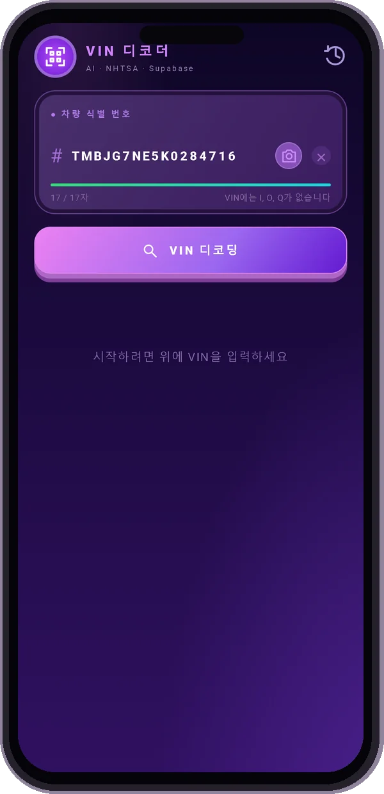
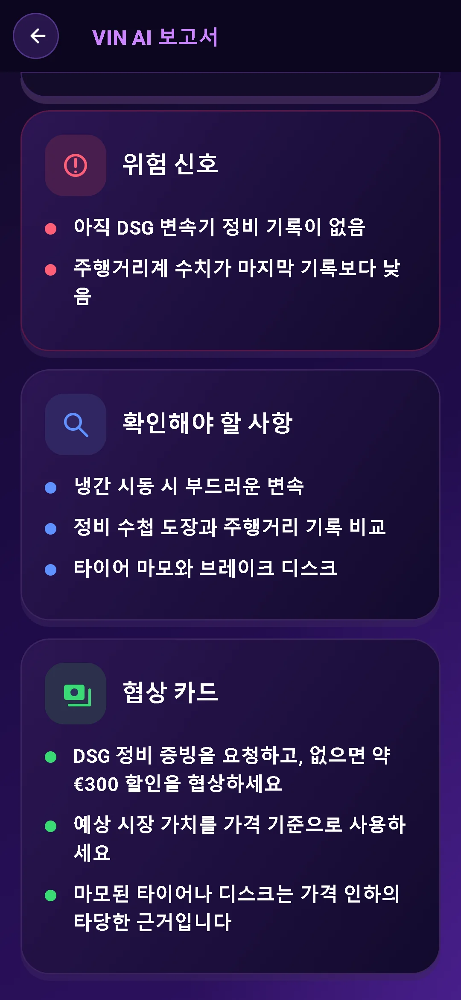
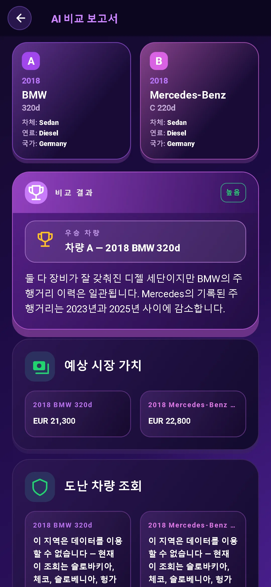

VIN을 스캔하세요
카메라로 VIN을 스캔하거나 직접 입력하세요. 무료 VIN 조회로 기본 차량 제원을 확인할 수 있습니다.
중고차마다 지나온 시간이 있습니다. VIN부터 확인하세요.
제원과 위험 신호를 확인하고 판매자와의 대화를 준비하세요.
보고서 미리보기가 잠겨 있습니다. 데이터 제공 여부는 차량과 출처에 따라 다릅니다.
Google Play에서 다운로드기본 VIN 해독 무료. AI 전체 보고서 $3.99. 구독 불필요.

VIN 조회에서 한 걸음 더 나아가세요. 차량 정보를 바탕으로 꼭 물어볼 질문을 준비하세요.
카메라로 VIN을 스캔하거나 직접 입력하세요. 무료 VIN 조회로 기본 차량 제원을 확인할 수 있습니다.
엔진, 트림, 구동 방식 등을 확인하세요. NHTSA 리콜·차주 불만 신고·충돌 안전 등급과 EPA 연비도 살펴보세요.
시장 가치와 주행거리 정보를 확인하세요. 협상 전에 판매 가격이 적절한지 판단해 보세요.
AI가 구매, 주의 또는 구매 포기를 제안합니다. 점검 점수와 예상 취약점, 현장에서 확인할 항목도 함께 살펴보세요.
판매자에게 물어볼 질문을 준비하세요. 점검 조언과 협상 팁으로 다음 단계를 계획하세요.
AI 도우미와 대화하며 사진에 관해서도 질문하세요. 지원하는 10개 언어로 자세한 설명을 받을 수 있습니다.


두 차량을 나란히 비교하세요. 제원과 AI 분석을 함께 살펴보고, 직접 보러 가기 전에 장단점을 파악하세요.
앞유리 아래, 도어 프레임 또는 차량 서류에서 17자리 VIN을 찾으세요.
해독된 차량 제원을 살펴보고 위험 요소, 질문과 실용적인 조언이 담긴 AI 보고서를 확인하세요.
필요한 질문을 하고 기록을 확인하세요. 구매를 결정하기 전에 전문가 점검을 받으세요.
일회성 구매. 구독이 필요하지 않습니다.
기본 정보만 필요하신가요? 앱에서 VIN을 무료로 해독하세요.
다음 차를 조회하기 전에 제공되는 정보를 확인하세요.
차대번호(VIN)는 현대 차량에 사용되는 고유한 17자리 식별 번호입니다. VIN 해독을 통해 모델, 엔진, 구동 방식 등 차량 제원을 확인할 수 있습니다.
운전석 쪽 앞유리 아래, 운전석 도어 프레임, 차량 등록 서류 또는 보험 서류를 확인하세요. 앱에서 카메라로 스캔하거나 직접 입력할 수 있습니다.
AI 전체 보고서에는 해독된 차량 제원, 구매·주의·구매 포기 판정, 점검 점수, 위험 신호, 점검 항목, 판매자 질문과 가격 협상 팁이 포함됩니다. 앱에서는 시장 가치와 주행거리 정보, NHTSA 안전 리콜·차주 불만 신고·충돌 안전 등급, EPA 연비도 확인할 수 있습니다. 정보 제공 범위는 차량과 출처에 따라 다릅니다.
앱에서 기본 VIN 해독은 무료입니다. AI 전체 보고서는 $3.99에 일회성으로 구매하며 구독은 필요하지 않습니다.
내 차도 확인하고 싶으신가요? 앱에서 VIN을 입력하세요.
Google Play에서 다운로드기본 해독 무료 · AI 전체 보고서 $3.99 · 구독 불필요